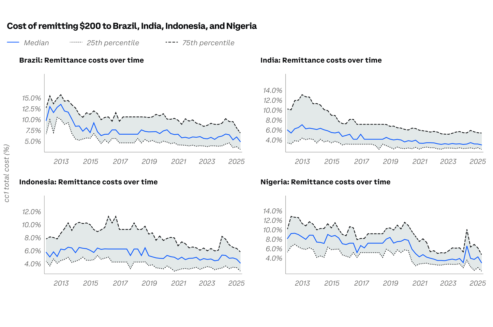

Research · Emerging markets
Stablecoins in emerging markets: Opportunities and challenges
A foundational payment innovation. A larger opportunity where payment and contracting frictions are highest.
The original executive summary · unabridged
Executive summary
Stablecoins are a foundational payment innovation rather than an incremental one. They collapse messaging, clearing, and settlement into a single onchain step, settle in seconds with finality, and can be programmed to act on conditions without an intermediary. They do this without relying on the two-tier banking system and the public backstops that support it. For emerging markets and developing economies (EMDEs), where payment and contracting frictions are highest, the payoff is correspondingly large. EMDE users already hold about two-thirds of global stablecoin supply. The question for policymakers is no longer whether stablecoins arrive but whether they arrive inside a regulatory perimeter or outside one.
The paper identifies four opportunities. First, agentic commerce: AI agents transacting in sub-cent amounts, at machine speed, cannot run on rails built around fixed fees, merchant accounts, and human clicks. Fast domestic systems such as UPI and PIX were built for retail tickets, and the cross-subsidy that keeps them free (about 0.25 percent of a typical transaction, funded by banks and taxpayers) may not stretch to machine volumes. Second, tokenization and smart contracts: with the asset and the cash leg on one ledger, a loan can repay itself from a delivery rider's fares, a farmer can lock in a price before planting, and a dataset can be licensed per query. Where courts are slow or costly, self-executing contracts make investments viable that hold-up risk currently prevents. Third, remittances: sending $200 costs about 6.5 percent globally against under 1 percent onchain, and EMDEs receive roughly $654 billion a year. Our estimates suggest a two-point cut in cost could add billions to these inflows alone. Fourth, competition: PIX has already shown that open, interoperable rails compress bank margins and shift deposits toward smaller institutions. Stablecoins extend that pressure to FX and cross-border settlement.
The risks are real but mostly concern system design, not the instrument. Deposit flight is limited because issuer reserves return to the banking system; the evidence so far shows no erosion of bank deposits. Local-currency coins are likely to strengthen monetary transmission by forcing banks to pass through policy rates. Dollarization is a legitimate worry for high-inflation, capital-controlled economies, not for large economies with strong domestic rails, and it can be contained through licensed ramps, holding limits, and barring banks from foreign-coin funding. Capital-flow management depends on chokepoints, and licensed exchanges and ramps are the new chokepoints; prohibition removes them while leaving the technology in place. Financial stability turns on reserve quality. Illicit use is a small fraction of volume and concentrates at unlicensed cash-out points, which argues for supervising ramps rather than banning coins. CBDCs, fast payment systems, and stablecoins are complements.
We propose a six-part regulatory blueprint: legal clarity, licensing and prudential rules for domestic issuers, ring-fencing of foreign-currency coins, integration with national rails, ongoing supervision and consumer protection, and international coordination.
Case studies of India, Brazil, and Indonesia show that the rails, the demand, and the use cases are already in place, and that the binding constraint in each is policy rather than technology. Countries that license a credible domestic-currency coin early, while ring-fencing foreign ones, will shape how stablecoins are used within their borders. Those that delay will find, as Nigeria has, that dollar coins arrive anyway and are hard to unwind.
A visual reading guide
Four opportunities, one programmable cash leg
Share of global stablecoin supply held by EMDE users, as reported in the paper.
Annual remittances received by EMDEs, as cited in the executive summary.
Cross-border programmable money alongside existing domestic payment systems.
- Agentic commerceSoftware pays for services at machine speed.
- Tokenization & contractsAssets and payments share a programmable ledger.
- Remittances & competitionOpen rails can reduce frictions in cross-border transfers and FX.
Source: supplied paper, executive summary and sections 3–4. These are the paper’s findings, not independently updated market estimates.

What does a lower transfer fee change?
An illustrative fee comparison—not a live quote or a forecast.
Illustrative fee difference:
The executive summary reports about 6.5% to send $200 globally and under 1% onchain. This example uses exactly 1% as a comparison assumption and applies both rates proportionally at other amounts. It is not a corridor-specific or all-in stablecoin price. FX, liquidity, cash-in/cash-out, custody, and compliance costs can change the result. See section 4.6, pp. 26–27.
Three countries, distinct policy choices
Choose a case to explore the paper’s assessment—not a live statement of local law.
India
Existing rails: UPI and digital public infrastructure provide a strong domestic base.
Opportunity: Remittances, agentic commerce, and programmable working-capital finance.
Constraint: No enabling issuer framework and tax frictions at conversion points.
Proposed next step: A regulated rupee coin and a capped stablecoin-to-UPI remittance pilot.
Paper section 6.1, pp. 31–32.
A six-part regulatory blueprint
Expand each element to connect the risk with the paper’s proposed response.
01 · Legal clarity
Define the instrument, regulator, issuer duties, and holder redemption rights. Make reserves bankruptcy-remote; clarify settlement finality, smart-contract enforceability, and tax treatment.
02 · Licensing and prudential safeguards
License issuers; require segregated 1:1 reserves in high-quality liquid assets, public reporting, independent audits, liquidity buffers, capital, and operational resilience.
03 · Ring-fencing foreign-currency coins
Use licensed access points and reporting, per-user holding limits, restrictions on bank foreign-coin funding and lending, and last-resort caps where warranted.
04 · Integration with national rails
Combine domestic instant-payment systems with stablecoin cross-border legs. Connect licensed conversion providers to national rails to reduce expensive cash-out steps.
05 · Supervision and consumer protection
Maintain ongoing audits, redemption stress tests, accessible redress, clear disclosures, financial education, and bounded pilots before scaling.
06 · International coordination
Align reserve, disclosure, and information-sharing standards across jurisdictions while adapting rules to local conditions.
Source: section 5, pp. 28–30. Editorial summaries of the proposals.
The complete research
Read the full argument, figures, country studies, methodology, and references in the original 40-page paper.
Download the full PDF ↗The executive summary above is preserved from the official online publication. Interactive modules are editorial reading aids; the paper is the source for detailed evidence and qualifications.